Definición: Es el asistente de inteligencia artificial de Microsoft (impulsado por la tecnología de OpenAI) que está profundamente integrado en el sistema operativo Windows y en las aplicaciones de oficina más comunes.
Mejor función: Productividad en entornos de oficina y Windows. Su mayor fuerte es ayudarte directamente en el trabajo diario: redactar correos en Outlook, automatizar hojas de cálculo en Excel, crear presentaciones en PowerPoint o ayudarte a cambiar configuraciones y buscar archivos en tu propia computadora.